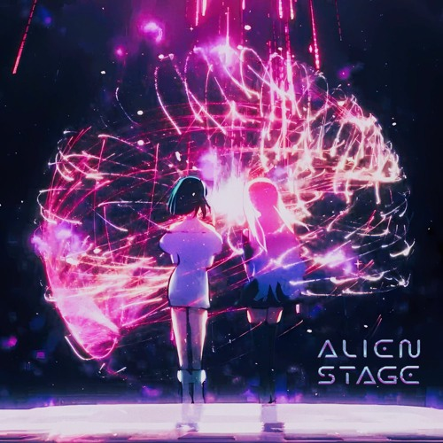

| Image | Name & Info | Songs that they sang |
|---|---|---|
| Sua, shes an elusive character throughout the show, she rarely interacts with other people besides Mizi since she likes her, she surprises others by her bold and unexpected behavior and isnt the type to be bothered by others attention |
Sweet Dreams
My Clematis  |
|
| Mizi, an outgoing character and is always carrying a positive attitude, she always show her true emotions and struggles with being dishonest. |
My Clematis
Ruler of my Heart |
|
| Ivan, his current personality isn't much know throughout the show, since childhood his demaneor is described to be stoic yet wistful. He's always reserved and observant by nature, and while he may be withdrawn, his gift for singing soars above his quiet demeanor. He also has is friends with Mizi and has a good relationship with her besides Sua. |
Black Sorrow
Cure |